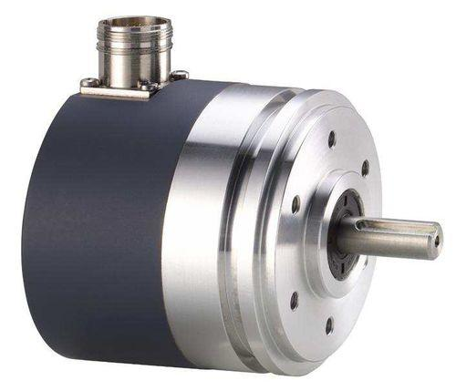

02_Absolute - Absolute: Position kept after power-off
1. What is an absolute encoder?
An absolute encoder is a position-feedback device that provides a position value corresponding to a specific shaft or axis location. Unlike a basic incremental encoder, it can identify its encoded position without relying solely on counting movement from a previously established reference.
Depending on its design, an absolute encoder can retain position information through a power interruption and report the encoded position when power returns.
Absolute encoders are widely used in servo systems, robotics, CNC machines, rotary tables, automated handling systems, and positioning axes where recovering position after power loss is important.

The essential difference is:
- Incremental encoder: Reports movement through pulses. The controller tracks the count to determine relative position.
- Absolute encoder: Reports a position code or digital position value that identifies the current position within its measurement range.
An absolute encoder does not automatically know the machine's complete mechanical coordinate system. The controller may still need calibration, homing, or a validated reference depending on the application.
2. How an absolute encoder works
An absolute encoder uses a coded pattern or sensing system to distinguish one position from another. Its electronics convert the sensed pattern into a position value.
A simplified signal path is:
Shaft or linear mechanism moves
|
v
Absolute encoder
|
v
Position sensing and encoding
|
v
Position value / feedback data
|
v
Servo drive or motion controller
|
v
Actual position used for control
Depending on the encoder technology, the position may be communicated through parallel digital outputs, a serial interface, or a vendor-specific feedback protocol.
The encoder may be powered by the servo drive or another specified supply. Some designs use additional mechanisms to preserve multi-turn information, while others depend on a battery or another position-retention method.
Important: "Absolute" describes the position encoding. It does not mean every encoder retains every kind of position information indefinitely under all power-loss conditions.
3. Single-turn and multi-turn absolute encoders
There are two major categories of rotary absolute encoders.
3.1 Single-turn absolute encoder
A single-turn encoder identifies the angular position within one revolution.
For example, it may distinguish positions from 0 degrees up to, but not including, 360 degrees.
When the shaft completes one full revolution, the angular position wraps back to the beginning of that revolution.
A single-turn encoder generally cannot determine how many complete revolutions the shaft has made from its single-turn position value alone.
3.2 Multi-turn absolute encoder
A multi-turn encoder identifies both:
- The angular position within the current revolution.
- The number of revolutions, or an equivalent multi-turn position value, within its supported range.
For example, a multi-turn encoder can distinguish the same angular position on different turns.
Single-turn position:
Turn 0, angle 90 degrees
Turn 1, angle 90 degrees
Turn 2, angle 90 degrees
Single-turn value alone:
90 degrees in every case
Multi-turn position:
Turn count + angle within the turn
The actual encoding and reported data format depend on the encoder.
Comparison
| Characteristic | Single-turn absolute | Multi-turn absolute |
|---|---|---|
| Position within one revolution | Yes | Yes |
| Distinguishes multiple revolutions | Not from its single-turn value alone | Yes, within its supported range |
| Typical use | Rotary axes limited to one turn or where turn count is managed separately | Axes requiring position across multiple turns |
| Power-loss position recovery | Retains encoded single-turn position if the encoder and installation preserve it | Can retain turn and single-turn position, subject to its design and retention method |
| Main limitation | Cannot independently identify the number of turns | Has a finite supported multi-turn range and system-dependent retention behavior |
Multi-turn capability is especially useful when a motor can rotate several turns while driving a ball screw, gearbox, or rotary mechanism.
4. How position is encoded
An absolute encoder assigns a unique code to each distinguishable position within its resolution and range.
4.1 Binary encoding
In a binary representation, each position is represented by a binary number.
For example, a simplified 3-bit encoder can represent \(2^3=8\) distinct position codes.
| Decimal position code | Binary code |
|---|---|
| 0 | 000 |
| 1 | 001 |
| 2 | 010 |
| 3 | 011 |
| 4 | 100 |
| 5 | 101 |
| 6 | 110 |
| 7 | 111 |
A real encoder uses more bits for finer resolution. This example illustrates encoding only, not the physical construction of every absolute encoder.
4.2 Gray code
Some absolute encoders use Gray code, in which adjacent position codes differ by one bit.
For example:
| Decimal position | Binary | 3-bit Gray code |
|---|---|---|
| 0 | 000 | 000 |
| 1 | 001 | 001 |
| 2 | 010 | 011 |
| 3 | 011 | 010 |
| 4 | 100 | 110 |
| 5 | 101 | 111 |
| 6 | 110 | 101 |
| 7 | 111 | 100 |
Gray code can reduce ambiguity during transitions between adjacent positions because only one bit changes between neighboring codes in the ideal code sequence.
However, actual measurement performance also depends on sensor construction, signal processing, electrical interface, and mechanical conditions.
5. Resolution and position accuracy
An encoder's resolution describes how finely it distinguishes position. Resolution is not the same as accuracy or repeatability.
5.1 Calculating angular resolution
For a single-turn encoder with \(N\) distinguishable positions:
For an encoder with 16-bit single-turn resolution:
This is approximately 0.00549 degrees per nominal position increment.
It does not guarantee that the complete machine can position to that accuracy. The motor, gearbox, coupling, mechanical structure, control system, and calibration all affect actual performance.
5.2 Resolution, accuracy and repeatability
| Term | Meaning |
|---|---|
| Resolution | Smallest nominal position increment represented by the encoder |
| Accuracy | How closely the reported position corresponds to the true position |
| Repeatability | How consistently the same position can be reached under specified conditions |
| Hysteresis | Difference in indicated position associated with approaching a position from different directions, where applicable |
| Absolute position range | The supported range over which the encoder can uniquely represent position |
A high-resolution encoder can still be part of a machine with poor positioning accuracy because of gearbox backlash, screw errors, thermal expansion, mounting problems, or incorrect scaling.
6. How position is retained through power loss
Absolute encoders can use different technologies to preserve position information. The retention method is a critical part of understanding their behavior after a shutdown.
6.1 Single-turn position
A single-turn absolute encoder measures its angular position within one revolution. The coded position is available when the encoder is powered and its electronics are operating correctly.
After power returns, it can report the current angular position without needing to reconstruct that position solely by counting incremental pulses from the last startup.
However, the position may be insufficient to determine the full position of a mechanism that can move through multiple revolutions.
6.2 Multi-turn position
Multi-turn absolute encoders must also determine the number of turns within their supported range.
Common implementation types include:
- Battery-backed systems: Use a battery to support turn-count tracking during power loss, according to the encoder's design.
- Gear-based multi-turn systems: Use mechanical gearing and sensing elements to track additional revolutions.
- Energy-harvesting or self-powered turn-count systems: Use movement-related energy and electronic circuitry to track turns without relying on a continuously powered battery, within the design's specified conditions.
These approaches are not interchangeable. The exact retention method, backup requirements, and operating limits must be verified from the manufacturer's documentation.
6.3 Critical distinction: encoder position versus machine position
Suppose a servo motor drives a vertical axis through a gearbox and ball screw. The encoder may preserve the motor shaft's position during power loss, but the actual machine load can still move because of gravity, backlash, a slipping coupling, or another mechanical condition.
Therefore:
Retaining the encoder's position value does not automatically prove that the machine load is still at the expected coordinate.
Applications requiring reliable position recovery must consider the mechanical transmission, holding brake, possible load movement, reference validation, and the machine's safety requirements.
7. Absolute encoder interfaces and communication
Absolute position can be transmitted using several electrical and communication interfaces. The encoder, drive, and controller must support compatible protocols.
| Interface type | General characteristics | Practical consideration |
|---|---|---|
| Parallel digital output | Position represented across multiple digital signal lines | Requires enough compatible inputs and suitable signal handling |
| SSI (Synchronous Serial Interface) | Synchronous serial transmission of position data | Clock, data, timing, and configuration must match |
| BiSS-C | Serial encoder interface supporting position data and additional communication features | Requires compatible master and encoder implementation |
| EnDat | Encoder interface associated with supported absolute feedback systems | Compatibility with the drive and encoder version matters |
| HIPERFACE / HIPERFACE DSL | Feedback interfaces used in supported industrial motor and encoder systems | Requires the appropriate drive interface and configuration |
| Vendor-specific serial feedback | Proprietary or ecosystem-specific feedback communication | Compatibility must be verified for the exact models |
These interfaces are examples, not a list of interchangeable standards. Some use separate data and clock lines; others use different physical layers, data formats, or communication arrangements.
A servo drive may support a specific encoder protocol internally. That does not mean the encoder can simply be connected to a generic PLC input module.
What must be verified?
- Encoder model and supported protocol.
- Drive feedback interface.
- Supply voltage and current requirements.
- Connector and pinout.
- Cable type and maximum permitted length.
- Data format and position resolution.
- Single-turn or multi-turn configuration.
- Required parameterization and electronic identification.
- Firmware compatibility and diagnostics.
An encoder can be mechanically compatible with a motor but electrically incompatible with its drive.
8. Absolute encoder integration in a servo system
A typical system works as follows:
Motion controller
|
| Target position and motion profile
v
Servo drive
|
| Motor power
v
Servo motor
|
v
Mechanical load
Absolute encoder
|
| Encoded position feedback
v
Servo drive
|
| Position and speed information
v
Closed-loop control
In some systems, the encoder feedback goes directly to the servo drive. In other architectures, position information may also be exchanged with a motion controller through a supported network.
The drive compares commanded motion with feedback and regulates motor operation. A controller may use the actual position to coordinate multiple axes or verify machine sequencing.
Example: robotic axis
A robot joint may need to know its angular position after a planned shutdown or power interruption.
An absolute encoder can provide the encoded joint position when the system restarts, subject to the encoder's retention method and the robot controller's validation procedures.
The controller must still consider:
- Whether the joint moved while power was off.
- Whether the encoder's multi-turn information remains valid.
- Whether the mechanical transmission remained engaged.
- Whether the robot requires a mastering or calibration check.
- Whether the safety system permits the next movement.
Absolute feedback improves position recovery, but it does not eliminate the need for a valid robot calibration and safe restart procedure.
9. Absolute versus incremental encoders
| Characteristic | Incremental encoder | Absolute encoder |
|---|---|---|
| Basic information | Movement pulses | Encoded position value |
| Direction detection | Typically A/B quadrature | Depends on interface and position data |
| Index signal | Often provides a Z index | May have a reference or equivalent feature, but not necessarily an incremental Z output |
| Position after power loss | Basic system needs retained counts or re-referencing | Can report encoded position after power returns, subject to design |
| Multi-turn position | Usually needs count tracking or additional reference information | Available with supported multi-turn encoders |
| Wiring and interface | May use A/B/Z digital signals | May use parallel or serial feedback interfaces |
| Controller requirements | Counter or compatible encoder input | Compatible absolute feedback interface and data interpretation |
| Typical strengths | Simple pulse counting and movement tracking | Direct encoded position and position recovery |
| Key limitation | Position can be lost if count tracking is lost | Range, retention, interface and mechanical-reference constraints still apply |
Neither type is universally superior. Selection depends on the required position recovery, speed, resolution, cost, interface, environment, and machine architecture.
10. Homing with an absolute encoder
An absolute encoder can reduce or eliminate the need for conventional homing in some applications. However, the machine may still require a reference or validation procedure.
Homing or referencing may be necessary when:
- The encoder position is not trusted after an alarm or mechanical intervention.
- The encoder was replaced or its mounting position changed.
- The motor or gearbox was disconnected.
- The machine coordinate offset has been lost.
- A multi-turn value is invalid or outside its supported range.
- The machine requires a physical reference check for safety or accuracy.
Example
A rotary table uses a multi-turn absolute encoder and has a configured machine coordinate offset.
After power returns, the controller reads the encoder position. Before allowing automatic operation, it checks the feedback validity, drive status, reference configuration, and required machine interlocks.
Depending on the machine's design, the controller may accept the position directly or require a reference validation step.
Do not equate “absolute encoder fitted” with “homing is never required.” The correct behavior is defined by the entire motion system.
11. Common faults and troubleshooting
| Symptom | Possible cause | Diagnostic approach |
|---|---|---|
| Drive reports encoder fault | Feedback cable fault, incompatible protocol, sensor problem | Check exact alarm, connector, cable and compatibility |
| Position unavailable after startup | Encoder not powered, communication not established, invalid feedback data | Verify supply, interface and drive diagnostics |
| Position is valid but wrong | Incorrect scaling, coordinate offset, mounting or coupling issue | Compare encoder value with known mechanical reference |
| Multi-turn position is invalid | Battery issue, lost turn tracking, unsupported movement during power-off, configuration fault | Check retention method and manufacturer diagnostics |
| Battery warning | Backup battery nearing its specified limit, where applicable | Follow the manufacturer's replacement procedure |
| Position changes unexpectedly after power loss | Mechanical movement, invalid retained data, coupling slip or configuration problem | Validate the mechanical load and feedback position before enabling motion |
| Encoder communicates intermittently | Damaged cable, connector problem, electrical noise, incorrect wiring | Inspect installation and communication diagnostics |
| Position wraps unexpectedly | Single-turn boundary, incorrect turn-count interpretation, range or scaling issue | Check single-turn/multi-turn data and coordinate interpretation |
| Encoder replacement causes position error | Different resolution, parameterization, orientation or mounting reference | Verify motor/encoder configuration and recommissioning requirements |
Troubleshooting procedure
- Record the exact drive alarm and encoder status.
- Identify the encoder type and retention method.
- Verify the specified supply and feedback wiring.
- Confirm communication and parameterization.
- Check whether single-turn and multi-turn data are valid.
- Compare the reported position with the known mechanical state.
- Inspect couplings, gearboxes, brakes and other transmission components.
- Follow the approved referencing or recommissioning procedure.
- Permit automatic motion only when position validity and machine conditions are confirmed.
If a vertical or gravity-loaded axis may have moved while power was off, secure the load using the machine's approved procedure before investigating. Do not rely on the encoder reading alone to establish that the load is mechanically secure.
12. Encoder selection checklist
When selecting an absolute encoder, check the following:
- Type: Single-turn or multi-turn.
- Resolution: Required number of distinguishable positions.
- Accuracy and repeatability: Suitable for the machine's real requirements.
- Position range: Supported angular range and number of turns.
- Retention: Battery, gear-based, energy-harvesting, or another supported method.
- Interface: Compatible with the drive and controller.
- Electrical requirements: Supply voltage, current, signal levels and connector.
- Mechanical installation: Shaft type, mounting, alignment and permissible loading.
- Environmental rating: Temperature, vibration, contamination and ingress protection.
- Motion performance: Maximum speed and feedback update requirements.
- Configuration: Resolution, scaling, direction, coordinate offsets and supported parameters.
- Maintenance: Battery replacement, diagnostics, spare availability and recommissioning procedure.
Do not choose resolution alone. An encoder with extremely fine nominal resolution may add cost without improving machine performance if mechanical backlash, rigidity, calibration, or the controller limits the actual accuracy.
13. Interview questions and answers
1. What is an absolute encoder?
A feedback device that provides a coded position value corresponding to its current position within a defined range.
2. What is the main difference between an incremental and an absolute encoder?
An incremental encoder tracks movement through pulses, while an absolute encoder provides an encoded position value.
3. What is a single-turn encoder?
An encoder that identifies angular position within one revolution.
4. What is a multi-turn encoder?
An encoder that identifies angular position and the number of turns within its supported multi-turn range.
5. Does every absolute encoder require a battery?
No. Some designs use batteries, while others use mechanical or energy-harvesting methods, depending on the encoder architecture.
6. Does an absolute encoder eliminate homing?
Not always. A machine may still require reference validation, calibration, or homing after certain faults or mechanical interventions.
7. What is Gray code?
A coding scheme in which adjacent codes differ by one bit, helping reduce ambiguity during transitions between neighboring positions.
8. Does high encoder resolution guarantee high positioning accuracy?
No. Accuracy also depends on encoder errors, mechanical transmission, mounting, calibration, thermal effects and control performance.
9. What is the advantage of a multi-turn encoder?
It can distinguish positions that have the same angle but occur on different revolutions.
10. What can cause multi-turn position loss?
Possible causes depend on the encoder design and include a failed backup battery, loss of turn tracking, invalid configuration, or movement beyond supported conditions.
11. Can any absolute encoder connect directly to any servo drive?
No. The feedback interface, protocol, electrical requirements, and supported configuration must be compatible.
12. What should be checked after replacing an absolute encoder?
Confirm model compatibility, mounting orientation, feedback parameters, position scaling, coordinate reference and the required commissioning procedure.
13. Why can an absolute encoder report the correct motor position while the machine position is wrong?
The gearbox, coupling, screw, or load may have moved independently or developed backlash or mechanical slip.
14. What is the difference between absolute position and machine coordinates?
Absolute position is the encoder's position information. Machine coordinates depend on the configured reference, offset, direction, scaling and mechanical relationship.
15. Why is position validation important after power loss?
It helps establish that the feedback value corresponds to the machine's actual mechanical state before automatic motion is permitted.
14. Practical exercises
Exercise 1: Calculate absolute angular resolution
A single-turn absolute encoder has 17-bit resolution.
Number of distinguishable positions:
Nominal angular increment:
Answer: approximately 0.002747 degrees per position increment, without implying equivalent machine accuracy.
Exercise 2: Choose single-turn or multi-turn
A rotary axis can rotate through 12 complete revolutions. It must recover its shaft position after a power interruption.
A single-turn encoder alone cannot distinguish all 12 revolutions. A suitable multi-turn absolute encoder is a likely choice, subject to the required range, retention behavior, and mechanical design.
Exercise 3: Diagnose an incorrect startup position
A multi-turn servo axis powers up without an encoder alarm, but the reported machine coordinate is inconsistent with its physical position.
Investigate:
- Whether the encoder's absolute data is valid.
- Whether the machine coordinate offset is correct.
- Whether the gearbox or coupling moved.
- Whether the encoder was replaced or remounted.
- Whether the turn count and scaling are configured correctly.
- Whether the machine's reference validation procedure is required.
Do not assume that an absence of encoder alarms proves the machine coordinate is correct.
Exercise 4: Create an encoder asset record
Record the following information for an installed servo axis:
| Field | Required information |
|---|---|
| Axis or machine tag | Site-defined identifier |
| Encoder model | Manufacturer and complete model number |
| Encoder type | Incremental, single-turn absolute or multi-turn absolute |
| Resolution | Single-turn resolution and supported turn range |
| Feedback interface | Exact protocol and electrical interface |
| Retention method | Battery, mechanical, energy-harvesting or other specified method |
| Servo drive | Compatible drive model and feedback input |
| Mechanical arrangement | Direct coupling, gearbox, ball screw or other transmission |
| Position scaling | Counts or encoded units to machine units |
| Reference procedure | Homing, validation or calibration requirement |
| Maintenance | Battery service and replacement/recommissioning instructions, where applicable |
15. Final mental model
- Absolute encoder: Reports a coded position rather than relying solely on accumulated movement pulses.
- Single-turn encoder: Identifies position within one revolution.
- Multi-turn encoder: Identifies position across multiple revolutions within its supported range.
- Retention mechanism: Determines how position information is maintained during power loss.
- Drive/controller: Interprets feedback and converts it into usable motion coordinates.
- Machine mechanics: Determine whether the encoded shaft position corresponds to the actual load position.
The key principle is that an absolute encoder improves position recovery after power interruption, but reliable machine positioning still depends on valid feedback, correct configuration, mechanical integrity, and the appropriate reference procedure.
Next topic: 02_PLAN_WISE_2026\02_INDUSTRY3_0\02_Auto_Tech\06_Servo_Motion\03_Encoder\03_Wiring_Signals
03_Wiring_Signals - Wiring & signals: Shielding, supply, signal check
Note: The next topic path supplied in the current sequence was 03_Wiring_Signals, so that is the next encoder topic to study. If the folder numbering in your actual study index differs, preserve your index's exact path.